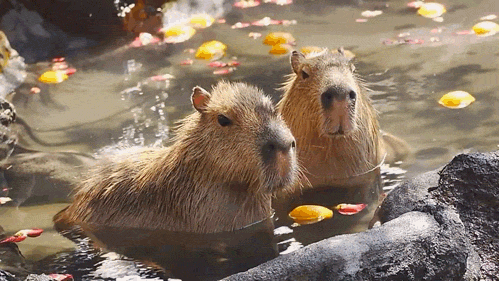
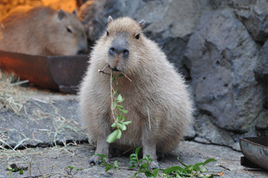

Название животного берёт начало от слова ka’apiûara, что на мёртвом языке тупи (родственном языку индейцев гуарани) буквально означает «поедатель тонкой травы» (kaá (трава) + píi (тонкий) + ú (есть) + ara (суффикс, аналогичный русскому суффиксу -тель))[3][4]. В наиболее близкой к оригиналу форме capivara оно вошло в португальский язык и широко употребимо в Бразилии. Уже в форме capibara через испанский слово вошло в английский, русский, японский и ряд других языков. В испаноговорящих странах Латинской Америки также в ходу и другие названия, происходящие из языков местных индейцев: carpincho (Аргентина, Перу и др.), chigüiro (Венесуэла, Колумбия), jochi (Боливия), ñeque (Колумбия) и др.
Научное название (как родовое, так и видовое) Hydrochoerus hydrochaeris переводится как «водяная свинья» (др.-греч. ὕδωρ — вода + χοῖρος — свинья), калька с которого послужила основой как для альтернативного русского наименования этого животного — водосвинка, — так и названий его на китайском (水豚), венгерском (Vízidisznó), исландском (Flóðsvín) и некоторых других языках, а также для вариантов, употребимых в Аргентине (chancho de agua и puerco de agua).

